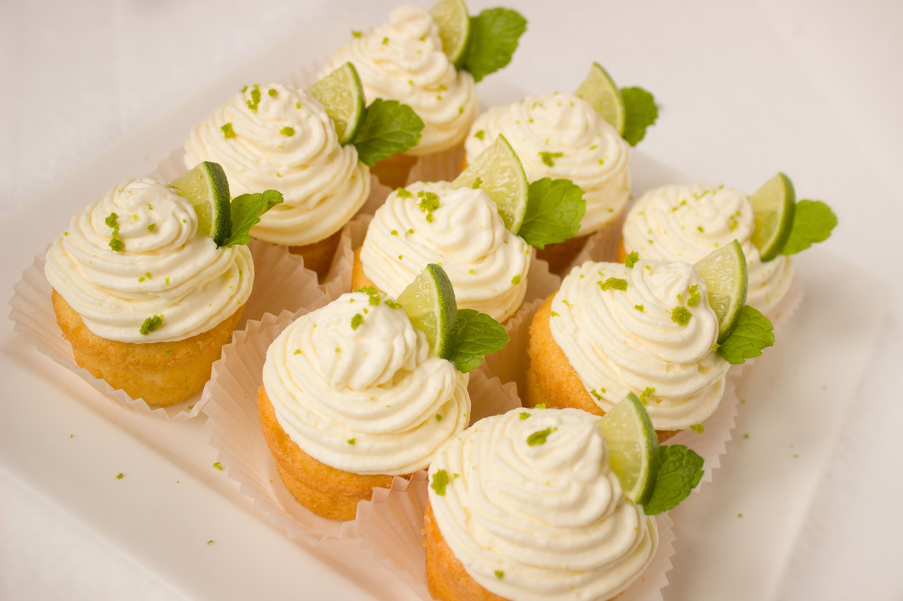

Helpot kuppikakut

Tässä on helppo perusohje kuppikakuille, joiden teko onnistuu lastenkin kanssa. Taikinaan voi lisätä oman maun mukaan esimerkiksi suklaata, pähkinöitä tai pursottaa vaikka paistonkestävää hilloa taikinan sekaan ennen paistoa. Kuorrutteen voi halutessaan jättää kokonaan pois jolloin tuloksena on pelkkiä muffineja.
Raaka-aineet (n. 8 jättimäistä, 12-16 keskikokoista tai 24 minikuppikakkua)
- 3 dl vehnäjauhoja
- 1,75 dl sokeria
- 2 tl leivinjauhetta
- 0,5 tl suolaa
- 2 tl vaniljasokeria
- 100 g sulatettua voita
- 1 kananmuna
- 0,75 dl maitoa
Valmistus
- Kuumenna uuni 200 asteeseen.
- Sekoita keskenään kuivat aineet.
- Lisää seokseen ensin voi, sitten muna ja maito.
- Sekoita kunnes taikina on tasaista.
- Mikäli sinulla on muffinsipelti, laita vuoat koloihin ja täytä n. 3/4 osaa vuosta taikinalla. Mikäli peltiä ei ole, kannattaa vuokia laittaa kaksi päällekkäin, jotta vuoasta saa tukevamman eivätkä kuppikakut leviä.
- Paista kuppikakkuja uunin keskitasolla n. 20-25 minuuttia. Minikuppiksille paistoajaksi riittää n. 15 minuuttia.
- Nosta valmiit kuppikakut ritilälle jäähtymään ja koristele vasta kun ne ovat täysin jäähtyneet.

